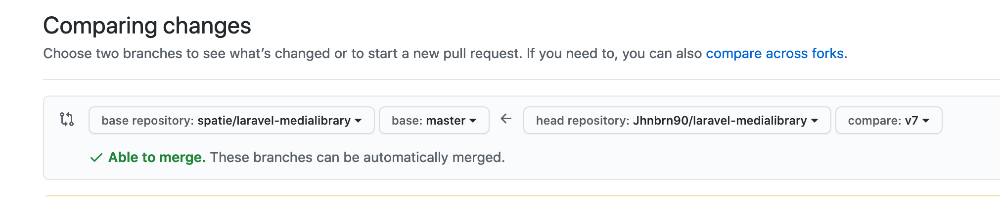

Contributing to an open source PHP package
- Published: 17-09-2020
Introduction
In view of upcoming Hacktoberfest, I want to share some tips for beginners who might want to make their first contribution specifically to a PHP package. From my own experience, I know it can look daunting to work on a package as opposed to a "regular" (Laravel) application.
This post is intended to provide some guidance to first-time contributors to open source PHP packages.
Step 1. Fork the package on GitHub
As an example, say we want to work on the laravel-medialibrary package.
First, fork the package on GitHub, since we (probably) do not have rights to push branches to the main repository. The fork will act as our "working copy" of the package and serves a central place to push branches containing your work.
Step 2. Clone your fork
Clone the package from your fork to your local machine. Personally, I have a separate folder for "applications" and "packages".
cd packages
git clone git@github.com:Jhnbrn90/laravel-medialibrary.git .
Step 3. Require the package within a (Laravel) project
Require the cloned package within an application to test the desired functionality or bug fix. This application can for example be a fresh installation of Laravel, but it doesn't have to be.
Personally, I always create a new Laravel application named "hacktober".
In this application, you can require the package locally instead of via Packagist, by defining a custom so called repository in the composer.json file of the application.
Replace the "url" with the directory where the package lives.
{
"scripts": { ... },
"repositories": [
{
"type": "path",
"url": "../../packages/laravel-medialibrary"
}
]
}
Since Composer uses the specified repositories as a fallback, you'll need to update the name of your package in composer.json. Otherwise, it would just pull in the latest version of the laravel-medialibrary by Spatie from Packagist.
You can rename the package in composer.json as follows:
{
"name": "JhnBrn90/laravel-medialibrary",
....
}
Important: never commit this change!
Require the package in the Laravel application:
composer require JhnBrn90/laravel-medialibrary
This will create a symlink to the local package instead of installing the package from Packagist.
Step 4. Commit your work
All changes you make in the package will now directly be reflected within the application used to test the package.
Create a new branch for your feature or bug fix from the branch as specified in the project's contribution guidelines, commonly described in a CONTRIBUTING.md file.
git checkout -b feature/some-feature
It is important to commit your changes to a branch other than the master branch on your fork, since maintainers (or others) might want to push changes to your branch which is impossible if you create a PR from your master branch. Thanks to Caleb (@calebporzio) for this explanation on twitter:
"Yeah, if you make a PR off your forked master, I can't push changes to it. If it's a feature branch I can pull down the PR and push changes. Helpful for things like adding tests or fixing merge conflicts on someone elses PR. Otherwise I have to wait for them."
Commit your work on this branch, while trying to separate commits by pieces of related code. The GitHub Desktop tool makes it easy to seggregate the changes into commits.
Step 5. Push your branch
If you're happy with the current state of your work, you can push the branch to your own fork of the repository.
git push --set-upstream origin some-feature
After pushing your branch, GitHub will most likely provide a URL to directly create a new PR. Alternatively you can create a PR via GitHub's webinterface.
Step 6. Create a new PR
Now that you have a branch which contains your work, you can create a new pull request to the branch according to the contribution guidelines (most commonly master or develop). Use the "New pull request" button in the Pull Requests tab and make sure to enable "compare across forks". This allows you to create the PR from the branch on your fork to the base repository.

Write a good description
The PR should ideally be easy to understand and be clear on its intentions: - why did you do/change something - how does it work - how can others test the PR
Sometimes, a PHPUnit or end-to-end test is required before your PR can be accepted. If you find this challenging, you could always ask the maintainer if somebody else could add these later to your PR.
An example of a good description could be as follows:
Closes issue #13
What has been done (and why)
A confirmation dialog was added to the Reset action button, to prevent accidental resets.
How does it work
- A view for a confirmation modal was added
- A callback was added to the
onClickaction, which opens a new confirmation modal
Additionally, the callback accepts parameters X and Y to be able to ..., see the code example below:
<?php
public function showConfirmationDialog($x, $y)
{
// Add a code example to clarify the PR
}
How to test
- Click on "Reset", confirm the modal and assert the counter is reset
- Click on "Reset", cancel the modal and assert the counter is not reset
Todo
These are some things I'm unsure about
- Add tests:
- to assert clicking "Cancel" does not reset the counter
- to assert clicking "Confirm" does reset the counter
Summary
I hope the suggested workflow can help first-time contributors to contribute to a PHP package with confidence. If you want to learn more about the ins-and-outs of creating a Laravel specific package, make sure to checkout these resources:
Advanced tips
Configure an upstream
While optional, I would advise to also configure the repository where we forked the package from as an "upstream" repository. This allows us to pull in changes from this repository at a later stage, for example when a PR was merged into master in the meantime.
We can add this remote by using the git remote add command:
git remote add upstream git@github.com:spatie/laravel-medialibrary.git
When you run git remote -v, you should now see two separate remotes: "origin" referring to your own repository and "upstream" referring to the originating repository.
Update (rebase) your PR with latest changes
While you work on an issue or feature, it might happen that another PR was merged before you created yours.
In that case, it might be a good idea to pull in the latest changes on master in the upstream repository.
Incorporate changes in master (or develop) in the branch you're currently developing on as follows:
- Make sure all changes on your working branch are committed and the working directory is clean
- Pull in the latest version of
masterfrom the upstream repository: git checkout mastergit pull upstream master- Rebase your feature branch on the latest version of
master: git checkout feature/some-featuregit rebase master